Бренды, экраны
и истории,
которым верят
Три учебных проекта — от фирменного стиля студии эпоксидной смолы до мобильного приложения и игрового буклета для музея.
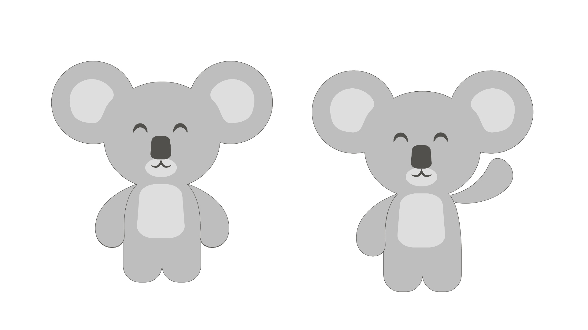
«Осиль смолу»
Полноценная разработка бренда для студии эпоксидной смолы: имя, визуальный язык и коммуникация с аудиторией. Ключевым условием было обязательное слово «сила» в названии — так родилось имя «Осиль смолу».
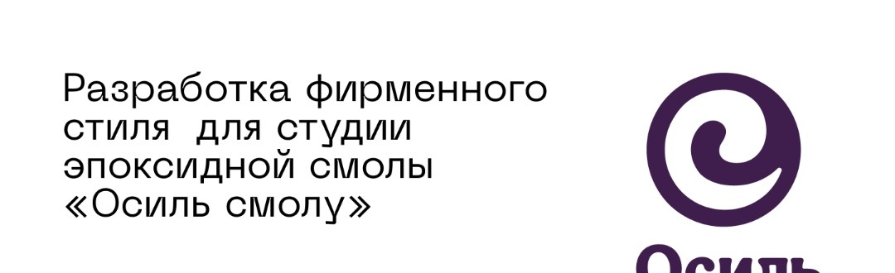
Знак и цвет как основа идентичности
Знак — спиралевидная форма, отсылающая к текучести смолы и к внутренней «силе», зашифрованной в названии. Мягкая, но уверенная форма считывается в любом масштабе.
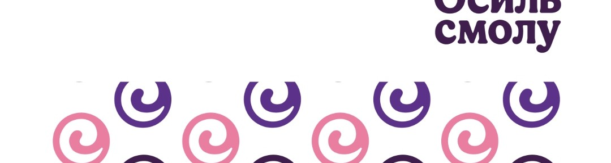
Ритм спиралей как узнаваемый почерк
Повторяющийся мотив логотипа превращается в фирменный паттерн — для упаковки, соцсетей и мерча. Он держит бренд собранным даже без текста.
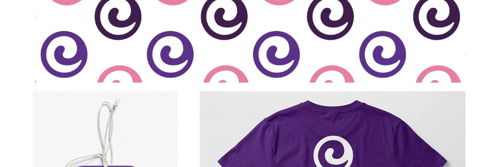
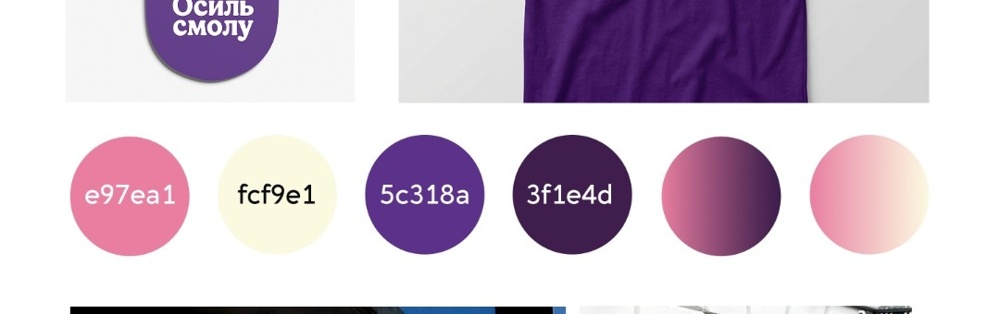
Бренд в физическом пространстве
Вывеска, витрина, оформление входа — фиолетовый акцент делает студию заметной на любой улице, а мягкий шрифт логотипа сохраняет тёплый, «ручной» характер бренда.
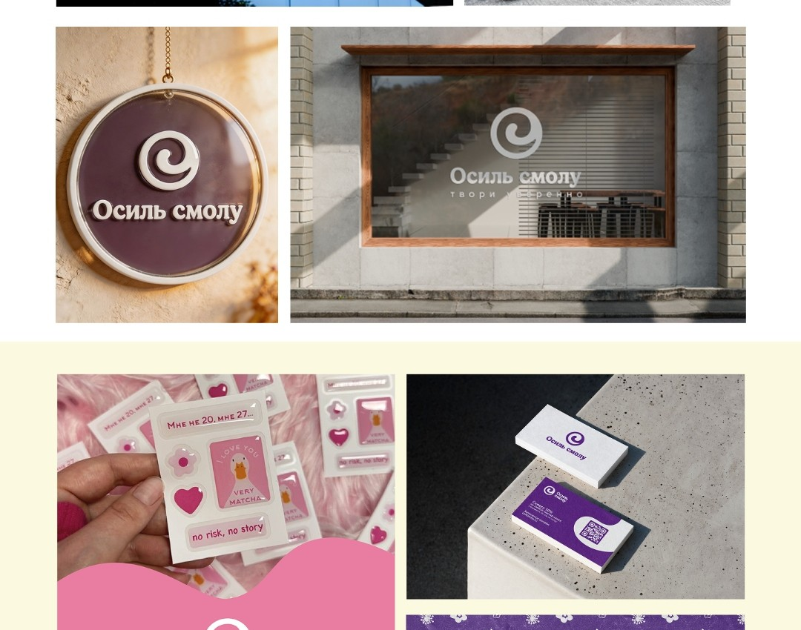
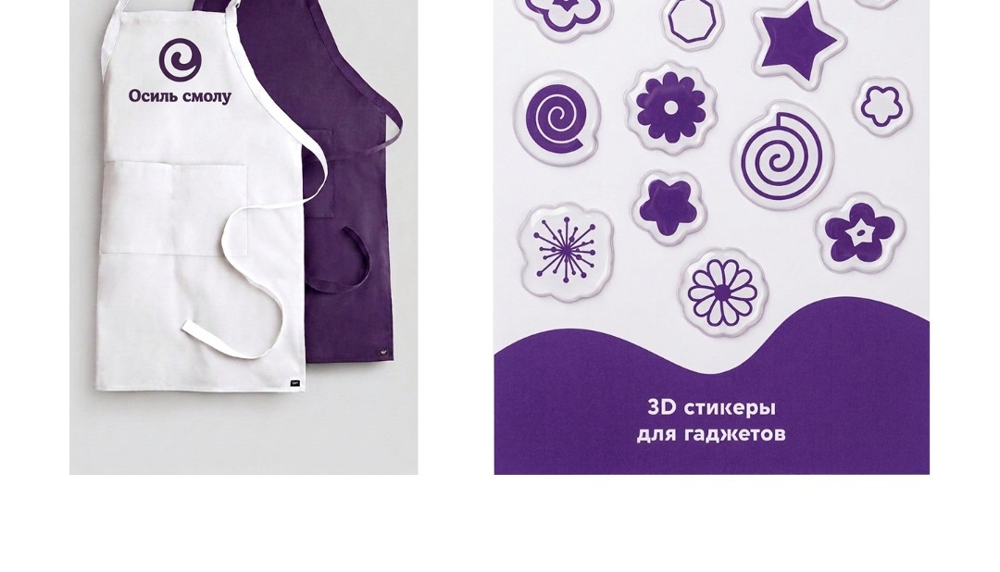
От студии до повседневных вещей
Рабочие фартуки, стикеры для гаджетов — фирменный стиль масштабируется на любые носители, оставаясь целостным. Результат — один из самых успешных проектов в моей практике.
«Медиалог»
Концепт мобильного приложения для сохранения впечатлений от фильмов, книг и других форматов контента. Идея выросла из личной проблемы — забывать название фильма, который смотрел пару дней назад, или книги, прочитанной год назад.
Привычка фиксировать впечатления
Еженедельные задания и персональные рекомендации мотивируют возвращаться в приложение каждый день, а кнопка «Создать воспоминание» — на первом экране, без лишних кликов.
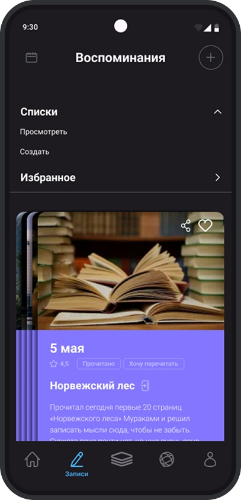
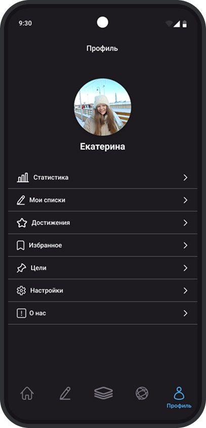
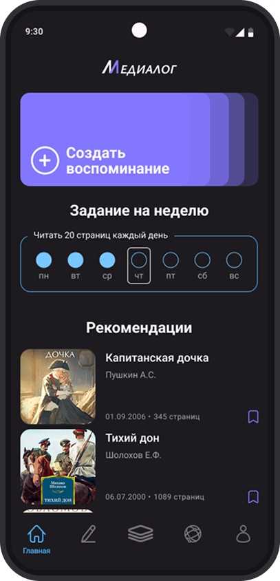
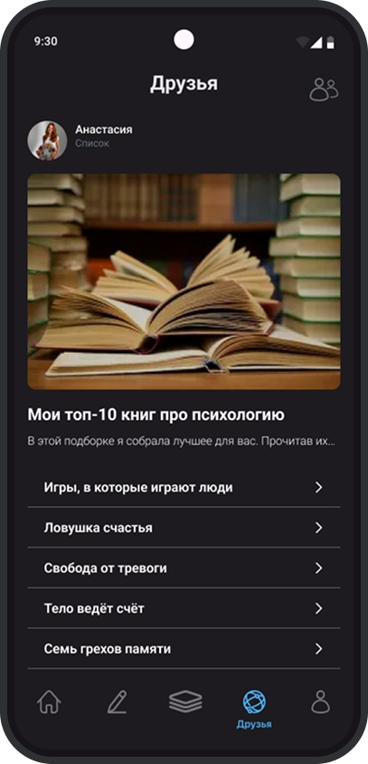
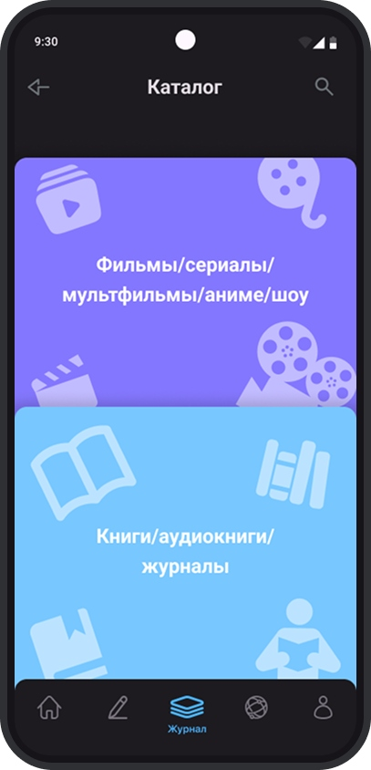
«Часто ли вы сталкиваетесь с тем, что не можете вспомнить, как назывался фильм, который смотрели пару дней назад? Я — часто. Поэтому разработала концепт приложения, в котором можно сохранить это надолго.»
Буклет музея советских игровых автоматов
Необычная форма и игровая механика: буклет в виде матрёшки превращается в квест — пройдя игру «Найди советские артефакты», посетитель получает скидку на билет.
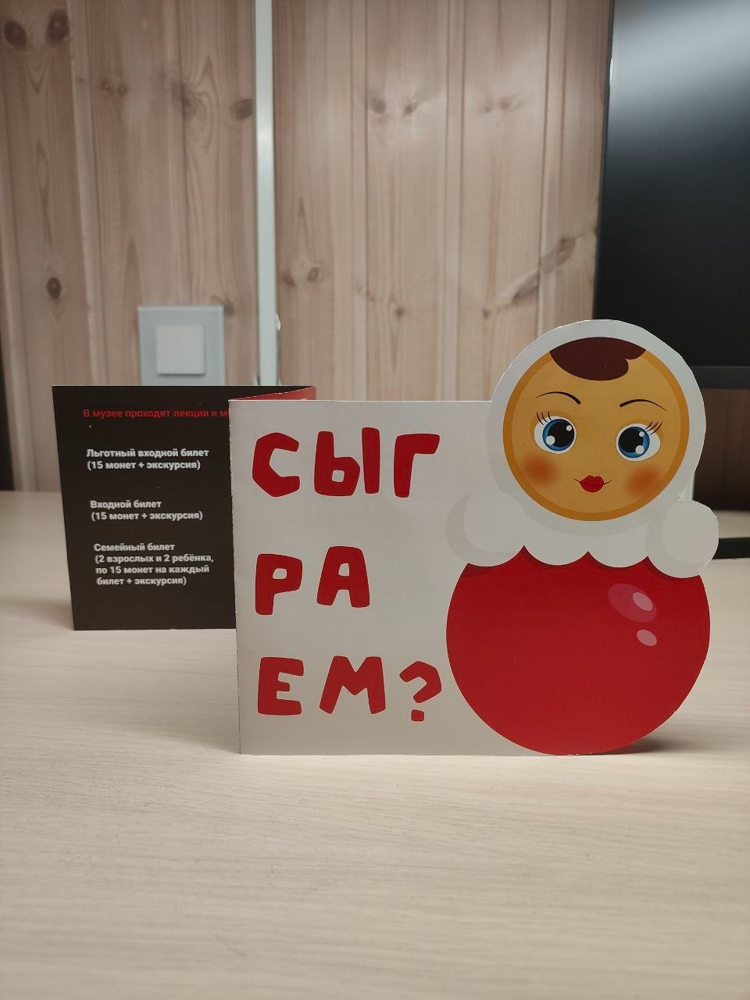
Буклет как приглашение к игре
Необычная вырубка в форме матрёшки сразу задаёт настроение — тёплое, советское, ностальгическое. Обложка не рассказывает о музее, а спрашивает: «Сыграем?»
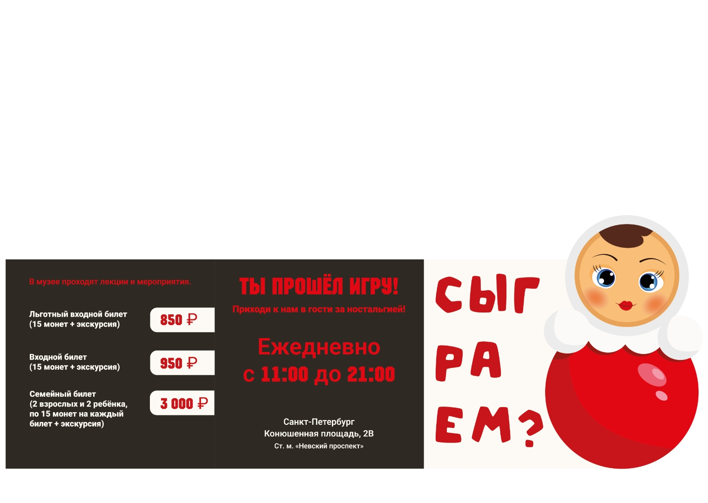
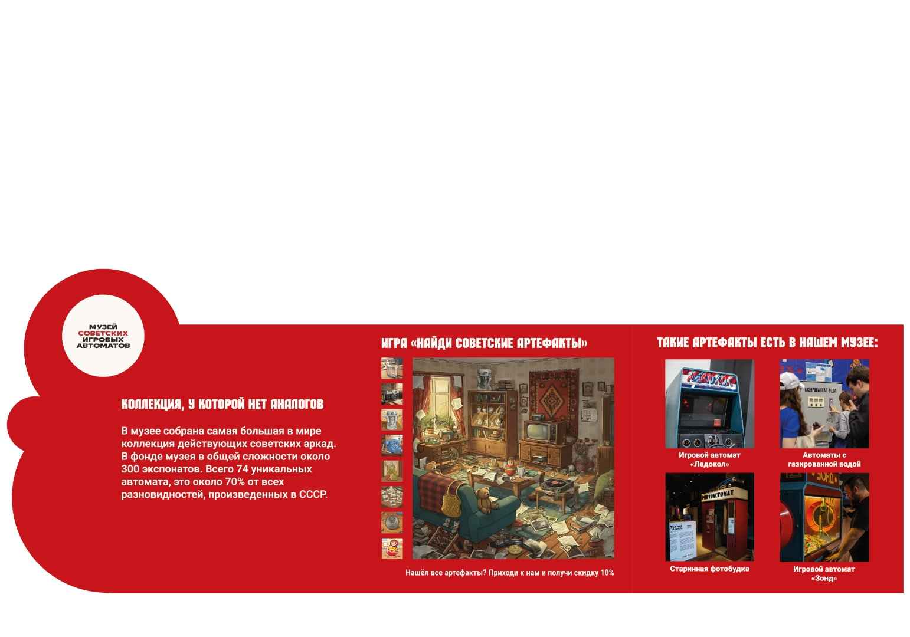
От игры — к посещению музея
После прохождения квеста внутри буклета читателя встречает финальный разворот: цены на билеты, расписание и приглашение прийти «за ностальгией» — игра плавно ведёт к конверсии.